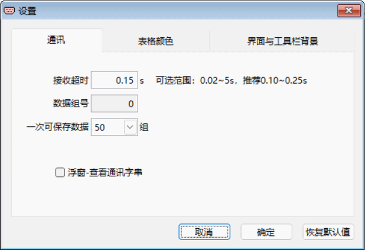
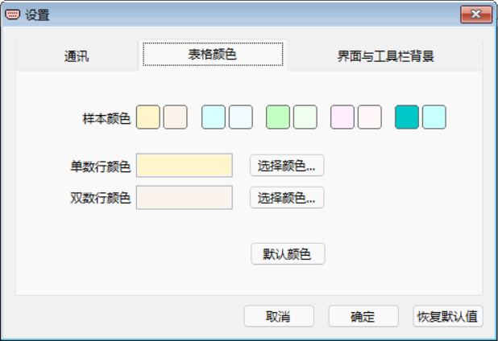
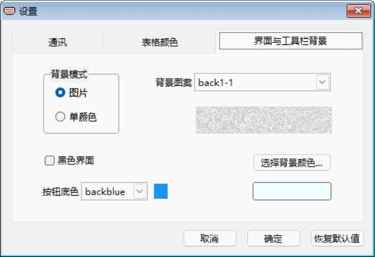

设置
RS232 Tool 可由用户自行设置通讯参数、表格颜色、工具栏背景及黑色界面等。 点击主界面菜单中或工具栏上的“设置”图标，将打开下面“设置”窗口 。
通讯有关参数的设置
“接收超时”——用于接收通讯测试，不熟悉串口通讯原理的不建议修改。
“数据组号”——表示已经有多少组通讯数据在内存暂存，用于查看不能修改。
“一次可保存数据组数”——表示最多可在内存暂存多少组的通讯数据，根据需要选，选较少的数据是便于浏览，最大可选100组。
“□浮窗-查看通讯字串”——勾选时打开浮窗，取消时关闭已打开的浮窗。

表格颜色设置
“样本颜色”——点击所选样本颜色图块，作为表格单数或双数行的颜色。
【选择颜色】
——
在其弹窗中自行选择所需颜色。
【默认颜色】
——点击后恢复默认颜色。

界面与工具栏背景设置
“背景模式”——两种模式，即图片和单一颜色。
“背景图案”——背景模式是图片时，用所选图案作为工具栏背景
。
【选择背景颜色】
——背景模式是单颜色时，用所选颜色作为工具栏背景色
。
“□ 黑色界面”——勾选时为黑色软件界面 ，取消时为正常的软件界面
。
“按钮底色”——黑色软件界面下 时的按钮颜色。
